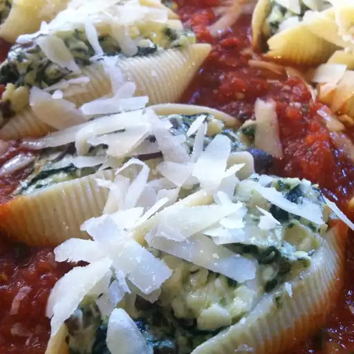

Chessy Stuffed Shells

Description
This is a delicious baked pasta dish with large shells filled with meat, spinach and cheese that children always seem to love. It is kind of a 'spaghetti that behaves itself!'
Ingredients
- 1 (16 ounce) package jumbo pasta shells
- 1/2 pound Italian sausage
- 1 (10 ounce) package frozen chopped spinach - thawed, drained and squeezed dry
- 1 cup ricotta cheese
- 1 egg
- 3 cloves garlic, crushed
- 1/2 lemon, juiced
- 1/4 cup grated Parmesan cheese
- Salt and pepper to taste
- 1/2 teaspoon dried oregano
- 2 cups spaghetti sauce
- 2 cups shredded mozzarella cheese
Steps
- Bring a large pot of lightly salted water to a boil
- Add shells to pot of water
- Drain and rinse in cold water
- Place sausage in a large, deep skillet
- Cook over medium-high heat until evenly brown. Drain and crumble
- In a large bowl, combine cooked sausage, spinach, ricotta cheese, egg, garlic, lemon juice and Parmesan cheese
- Season with salt, pepper and oregano
- Preheat oven to 350 degrees F (175 degrees C)
- Stuff pasta shells with the sausage and cheese mixture
- Place in a 9x13 inch baking dish
- Top with spaghetti sauce and mozzarella cheese
- Bake in preheated oven for 20 minutes or until the pasta is heated through and the cheese is melted